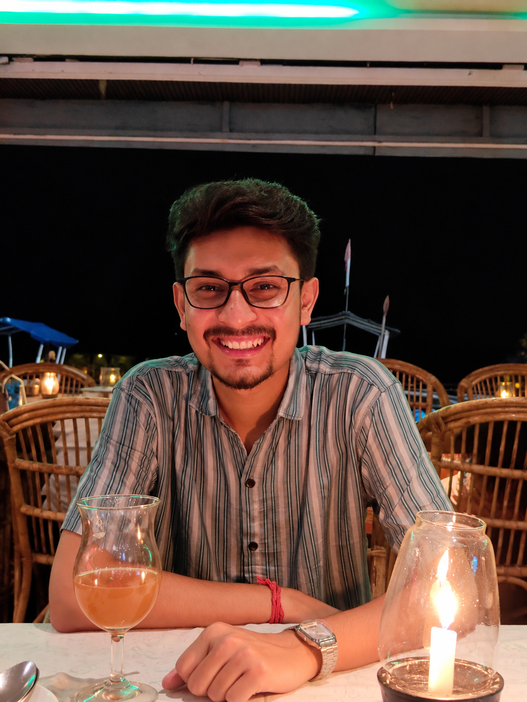

I build models that predict demand, financial trends, and what comes next.
Data scientist at EY India.
Pick a model and see how it reads the next 16 weeks
Illustrative data. Sales have a spike at every month-end, and each model handles it differently.
About me

I’m a data scientist based in Kolkata. I studied Physics at St. Xavier’s College, Kolkata and Big Data Analytics at RKMVERI, and I now build demand forecasting systems at EY India.
Before that, I worked in quantitative research, where I modeled implied volatility and developed options trading and hedging strategies. I also have hands-on experience with LLMs, including fine-tuning models to solve domain-specific problems.
Outside of work, I’m usually on a court or a field—playing football, badminton, or table tennis. So if you ever need an extra player to fill a spot, feel free to hit me up!
Check out my resumeWhere I’ve worked
Kolkata
Ernst & Young LLP (EY India)
Consultant, Data Scientist
- Led a Market Build engagement for a major FMCG client. I built category-wise demand forecasting in PySpark with Lasso, XGBoost, Random Forest, LightGBM and TimeGPT.
- Designed a two-stage framework for intermittent demand, plus hierarchical forecasting and disaggregation, so forecasts land at the granular key level planners need.
- Worked with demand planners to engineer month-end sales-spike features. Forecast accuracy rose 5% and bias fell 2% across all business categories.
- Ran root cause analysis in PySpark on large sales, market-trend, seasonal and holiday datasets to find and fix model weak spots.
- Won the “Client Extraordinary” award twice.
Kolkata
Feedsense AI Pvt. Ltd.
Quantitative Research Executive (earlier Vista Intelligence)
- Researched Black-Scholes and Heston models to extract and predict implied volatility, and used them to design an options trading strategy for the BankNifty index.
- Built an investment and hedging strategy for Axis Bank. It averaged 43% annual return, beat the market by 93% over five years and cut drawdown by 14%.
- Built a real-time video transcription pipeline with OpenAI Whisper and Ollama-3.2 for sentiment analysis of news, with 65% directional accuracy.
Projects
Explaining toxic text in Indian languages
IIT Patna, Dept. of Computer Science and Engineering, May to Dec 2022
Studied knowledge graphs and knowledge bases to understand toxic text. Used mBART to generate the stereotype and target group from a Hindi post.
Image classification with self-supervised learning
May to Jul 2022
Sampled 10% of CIFAR-10 with balanced sampling, extracted features with Barlow Twins on ResNet-50, and classified with logistic regression.
Malaria detection from blood smears
May to Jul 2022
Compared SGD with momentum, Adam, Adagrad and RMSProp on a 3-layer CNN. Adam reached 95.84% and Adagrad 95.62%.
Research
StereoHate: Toward identifying stereotypical bias and target group in hate speech detection
Published in Natural Language Processing (Cambridge University Press).
Read the paper (DOI 10.1017/nlp.2024.29)Skills and credentials
Languages
Python, SQL (MySQL, PostgreSQL), R
Libraries
NumPy, Pandas, PyTorch, PySpark, Matplotlib, LangChain
Forecasting
Lasso, Random Forest, XGBoost, LightGBM, TimeGPT, intermittent and hierarchical demand
Quant and NLP
Black-Scholes, Heston, implied volatility, Whisper, Transformers
Certified
SEBI NISM Series XV, Research Analyst
Education and awards
Working on a forecasting or research problem?
Write to me with what you’re trying to predict and I’ll tell you how I’d approach it.
GitHubLinkedInResume (PDF)